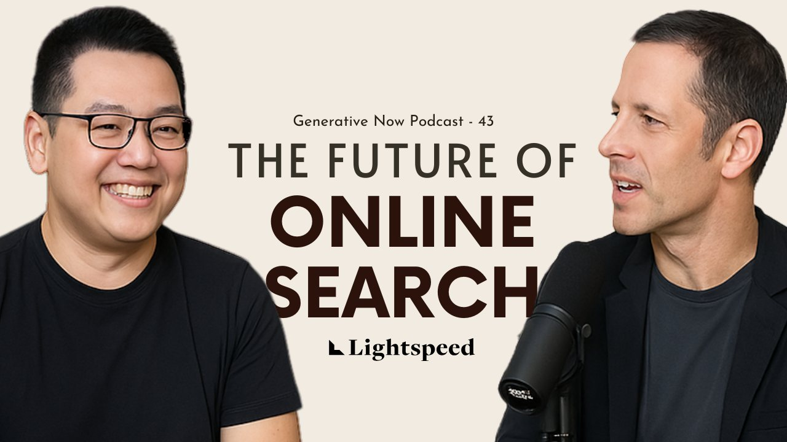
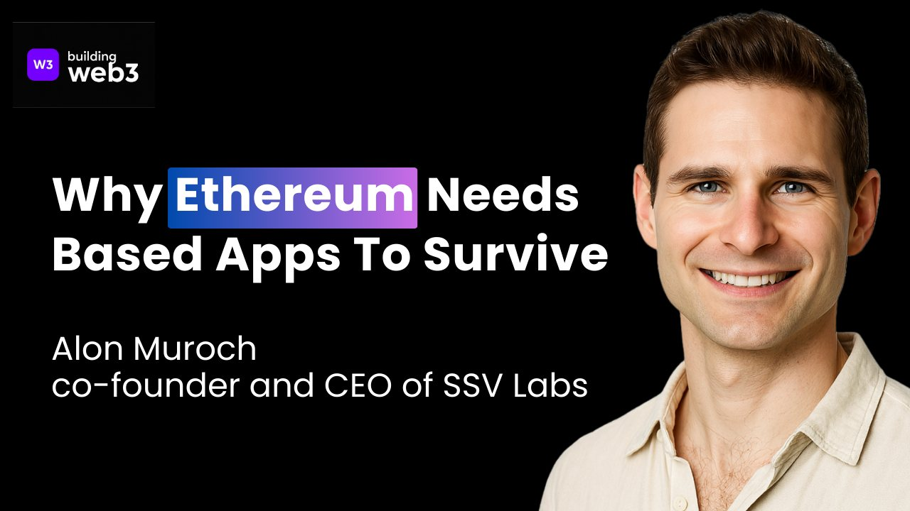
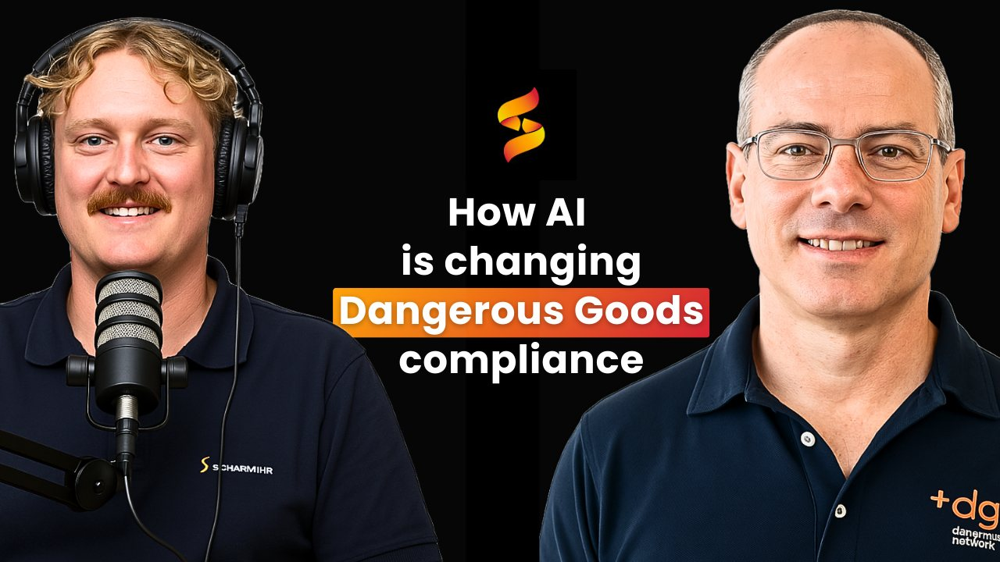
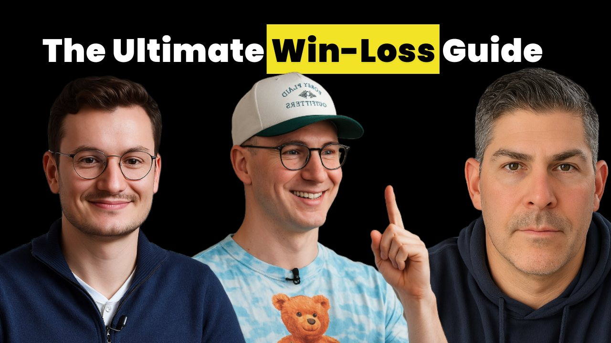
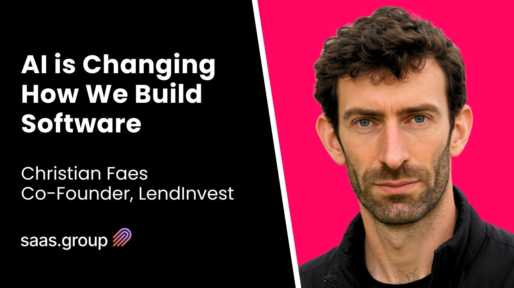
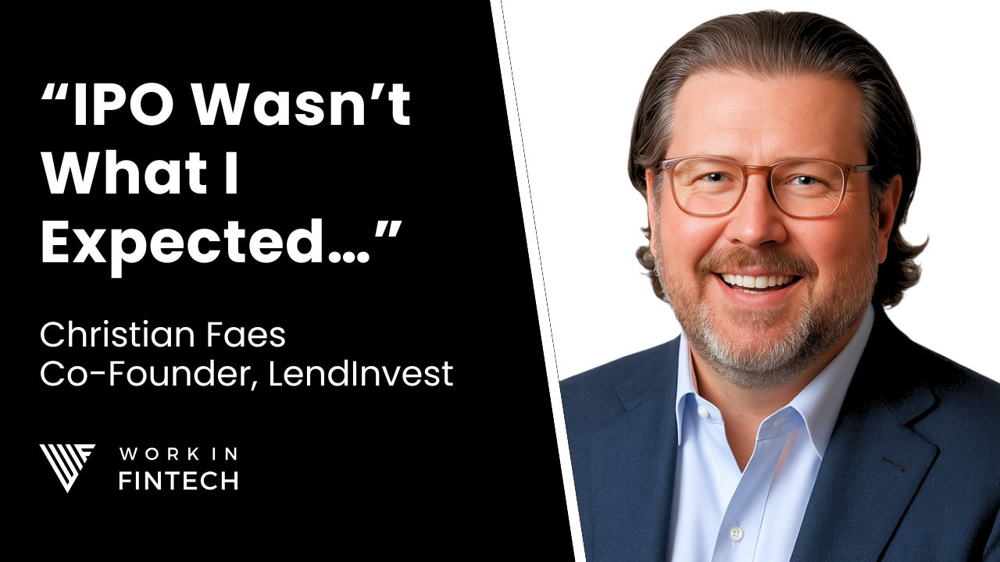

The podcast growth checklist
Most podcasts don't lose to better shows. They lose to better packaging. This is the checklist we run on every episode, from thumbnail to distribution.
Before anything else, the caveat that makes the rest of this honest.
None of what follows will save a boring conversation.
People watch podcasts for the conversation. That's the product.
Everything in this checklist is about making sure a good conversation actually gets found, clicked and finished. It raises the ceiling on what a great episode can do. It cannot raise the floor on a bad one.
With that said, here's what we check on every episode we run.
Packaging
Packaging is the highest-leverage hour of work in the entire process.
You'll spend twenty hours booking, recording and editing an episode. The thumbnail and title decide whether any of that gets seen.
A good episode with weak packaging loses to a mediocre episode with strong packaging every single time, and it isn't close.
What we check on every thumbnail:
- Brand colours, used consistently across every episode. A returning viewer should recognise your show in the feed before they read a word.
- The host's and guest's faces cover at least half the frame. Faces are what the eye locks onto while scrolling.
- Text on the thumbnail, always.
- The thumbnail and the title say different things, but work together. If the title repeats the thumbnail, you've spent two assets to deliver one idea. Used properly, the gap between them creates the curiosity that earns the click.
- The faces are high resolution. If your recording gave you a soft frame, run it through an upscaler first.
For that last one, a quick prompt that works well:
Enhance the quality of the face while keeping the clothes, expression, skin and hair colour, and all other facial features unchanged.
One thing worth internalising: the viewer is not studying your thumbnail. You've looked at it for an hour. They'll look at it for about half a second, alongside eleven others.
Judge your own work at that speed and the weak ones become obvious.
Thumbnails we've made






Titles
There's no single formula, but there are patterns that keep working. Four we use often:
1. Name plus a provocative line or summary.
MrBeast: If You Want To Be Liked, Don't Help People
2. Credential plus a provocative line.
Dopamine Expert: Doing This Once A Day Fixes Your Dopamine
3. Name on the interesting thing you discussed.
Mastercard CTO on The Past And Future Of Finance
4. The insight first, then the name or credential.
The Art of Selling Enterprise Software, with ServiceNow CEO Bill McDermott
Notice what all four have in common.
The interesting part comes first, and the credential does the work of making it believable.
These are four of many. Patterns are everywhere once you start looking, so be observant and steal structurally rather than literally.
The question to ask on every title: what would make the average viewer click instantly?
Not you. Not your team. The person who has never heard of your guest.
Tools like thumbnailpreview.com let you see the thumbnail and title together at real feed size before you publish. Worth the two minutes.
Production
Get these right and post-production gets easier, and everything downstream looks more expensive than it cost.
- A good camera. The DJI Osmo Pocket 3 Creator Kit is our recommendation for most shows: quick setup, genuinely portable, and it looks far better than the price suggests.
- A good microphone. Shure or RODE.
- Keep the mic in frame. It reads as a real podcast before a word is said.
- A clean, uncluttered background, or a completely plain one. Anything busy behind the guest competes with the guest.
Post-production
- Run the audio through Descript or Adobe Podcast. Audio quality is the single biggest driver of whether someone stays past the first minute. Viewers forgive average video. They leave over bad audio.
- Open with a properly edited intro.
- Switch frames roughly every minute, moving between gallery view, guest view and host view. Static framing makes an hour feel like two.
The trailer
The trailer is the second-highest-leverage asset after the thumbnail, and most shows skip it entirely.
- Clean cuts, strong pacing, brand colours.
- It should be obvious within seconds what the podcast is about.
- Its job is to confirm the decision the viewer already made when they clicked.
- Hook in the first five to ten seconds, driven by curiosity or emotion.
- Short and punchy, ideally under ninety seconds.
- End on a cliffhanger.
- Cut a vertical version for Reels and Shorts.
Distribution
One recording, then a month of content. The minimum we run per episode:
- At least four shorts from a one-hour conversation.
- Two long-form cuts, each with its own custom thumbnail.
- Four LinkedIn posts using video or stills from the episode, each with a strong opening line.
- Four X threads or long posts.
- Carousels, where the material suits it.
- A newsletter send, if you have a list.
- Articles built from the ideas in the episode.
The point isn't volume.
It's that a single conversation contains ten to fifteen genuinely useful ideas, and publishing it once gives each of them exactly one chance to land.
Short-form
- The first three seconds decide everything.
- Use a hook: visual, title, or transition. Pick one deliberately rather than hoping the clip opens well.
- Get the music and audio levels right. Nothing kills a clip faster than a viewer reaching for the volume.
- Add captions, ideally animated.
- Break the pattern regularly. Cuts, zooms, b-roll, text on screen. Anything that resets attention before it drifts.
How to use this
Don't try to fix everything at once.
Work top down.
Packaging first, because it's the cheapest change with the largest effect. Then the trailer. Then distribution.
Production and post-production matter, but they're the expensive fixes, and most shows are leaving far more on the table in the first three.
Run the list against your last five episodes and count how many boxes you're actually ticking.
That number is usually the honest answer to why the show isn't growing.
Want us to run this on your show?
We handle the whole checklist end to end, from packaging and trailers to short-form and distribution. Book a call and we'll audit your last five episodes against it for free.
Book a call →